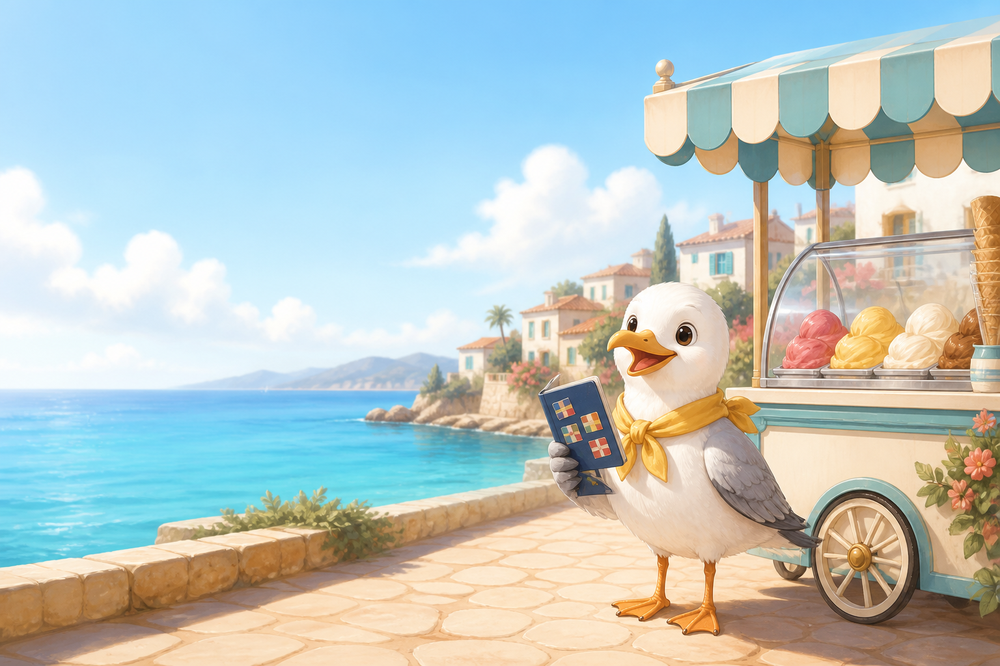

Nová hra
Akadémia budúcnosti
Pomôž robotovi Novovi zvládnuť 30 veselých misií – od laboratória až po prístav budúcnosti pri mori.
Začať dobrodružstvoMalí cestovatelia
Jednoduché prázdninové hry s Čajkou Leto. Bez registrácie a bez čítania.

Nová hra
Pomôž robotovi Novovi zvládnuť 30 veselých misií – od laboratória až po prístav budúcnosti pri mori.
Začať dobrodružstvo
Nová hra
Najprv sa nauč obrázky, potom päť milých slov na dovolenku.
Vyber si krajinuNová hra
Vyber si obrázok, farbu a vymaľuj si svoje stredomorské dobrodružstvo.
Spustiť omaľovánkuHľadacie dobrodružstvo
Pozri sa do obrázka a nájdi tri veselé prázdninové veci.
Spustiť hru